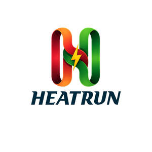

Trade Mark Journal No.2025/050 12 December 2025
UK00004302863 29 November 2025 (9,11,37)

- Class 9
- Electrical wiring installations; Electrical cabling; Electric wiring; Electric-car charger; Charging stations for electric vehicles.
- Class 11
- Valves [plumbing fittings]; Tub control valves [plumbing fittings]; Electrical radiators; Electrical boilers; Valves [faucets] being parts for sanitary installations; Pipes for heating boilers; Boiler pipes [tubes] for heating installations; Waste pipes for sanitary installations; Heating installations [water]; Water heating installations; Water faucets; Water taps being parts of sanitary installations; Gas water heaters [for household use]; Washers for water faucets; Radiators [heating]; Heating boilers; Central heating boilers; Central heating radiators; Gas boilers for central heating; Furnaces for central heating; Underfloor heating apparatus; Gas boilers for water heating; Electric central heating boiler systems; Underfloor heating installations; Humidifiers for central heating radiators; Air heating furnaces; Apparatus for heating; Heating apparatus; Thermal radiators for the heating of buildings; Solar heating apparatus; Heating installations; Installations for heating; Boilers for use in heating systems; Heating installations for gas; Heating units; Heating elements; Electric radiators for heating buildings; Flues for heating boilers; Electric heating elements; Electric heating installations; Heating apparatus, electric; Electric heating apparatus; Radiators for central heating installations; Heat sinks for use in heating apparatus; Heating filaments, electric; Heating armatures; Electric radiant heating apparatus; Steam radiators for heating buildings; Boilers for heating installations; Radiators for central heating systems; Boilers for central heating installations; Electric water heating apparatus; Flues for heating apparatus; Electrical heating elements; Hot water heating apparatus; Heat exchangers for central heating purposes; Heating installations (Hot water -); Hot water heating installations; Steam heating apparatus; Hot air heating apparatus; Underfloor heating apparatus and installations; Air heating apparatus; Fixed heating burners; Feeding apparatus for heating boilers; Solar heating installations; Electric trace heating; Air heating installations; Warm air heating apparatus; Cylinders for the heating of water; Installations for central heating; Central heating installations; Electric heating cables; Solar thermal collectors [heating]; Burners for heating installations; Infrared heating panels; Gas fuelled central heating installations; Temperature sensing apparatus [thermostatic valves] for central heating radiators; Thermal controls [valves] for central heating radiators; Heating apparatus for use in the home; HVAC systems (heating, ventilation and air conditioning); Flat radiators for central heating installations; Thermal storage apparatus [solar energy] for heating; Heating installations for fluids; Central heating apparatus; Temperature limiters [valves] for central heating radiators; Gas fired heating apparatus; Temperature sensors [thermostatic valves] for central heating radiators; Solar collectors for heating; Gas fired heating installations; Solar heating panels; Solar panels for use in heating; Temperature regulators [thermostatic valves] for central heating radiators; Apparatus for controlling temperature in central heating radiators [valves]; Temperature controlling apparatus [valves] for central heating radiators; Temperature control apparatus [valves] for central heating radiators; Temperature controllers [valves] for central heating radiators; Electric surface heating tapes; Flat heating elements; Water distributor armatures for heating; Floor heating apparatus; Industrial heating apparatus; Gas fired back boiler units for domestic central heating; Gas operated apparatus for heating; Heating apparatus incorporating flues; Electrical heating elements in the form of cables; Electrical storage heaters; Air-source heat pump water heaters; Heat pumps; Boilers for hot water supply installations.
- Class 37
- Plumbing; Installation of plumbing; Renovation of plumbing; Maintenance of plumbing; Plumbing services; Plumbing and gas and water installation; Plumbing and glazing services; Cleaning of water supply plumbing; Installation of plumbing systems; Plumbing installation, maintenance and repair; Plumbing repair advisory services; Plumbing installation advisory services; Rental of plumbing apparatus; Plumbing apparatus (Rental of -); Plumbing maintenance advisory services; Advisory services relating to the repair of plumbing; Electrical wiring services; Renovation of electrical wiring; Advisory services relating to the installation of plumbing; Electrical contractor services; Renovation, repair and maintenance of electrical wiring; Cleaning of water supply pipework; Repair services for domestic electrical appliances; Advisory services relating to the maintenance of plumbing; Heating contractor services; Services for the repair of pipes; Installation of water pipes; Renovation of underground pipes; Repair or maintenance of gas water heaters; Maintenance and repair of pipes used in industrial equipment; Furnace installation and repairs; Boiler cleaning and repair; HVAC (Heating, ventilation and air conditioning) installation, maintenance and repair; Boiler cleaning services; Maintenance and repair of industrial piping; Maintenance and repair of gas and electricity installations; Boiler repair services; Repair of sanitary installations; Insulation of pipes; Heating equipment installation and repair; Installation and repair of heating equipment; Repair of water supply installations; Repair of household and kitchen appliances; Maintaining and repair of drain pipes; Services for the installation of sewers; Advice relating to preventing blockages in plumbing lines; Renovating services relating to conduits for water supply; Repair of electrical equipment; Installation of pipework systems; Maintenance and repair of heating installations; Maintenance and repair of solar heating installations; Pipe installation services; Electric appliance installation and repair; Maintenance and repair of electrical earthing systems; Heating equipment repair; Installation of pipe insulation; Installation of heating and cooling apparatus; Installation of central heating; Central heating installation; Repair of heating apparatus; Installation of electrical earthing; Installation of electrical grounding; Repair of electrical equipment and electrotechnical installations; Installation of boilers; Installation and maintenance of solar thermal installations; Pipeline installation and repair; Heating equipment installation; Lighting apparatus installation; Installation, maintenance and repair of air-conditioning apparatus; Installation and repair of air-conditioning apparatus; Installation of energy-saving apparatus; Installation of apparatus for air-conditioning; Installation, repair and maintenance of heating equipment; Installation of apparatus for heating; Installation of heating apparatus; Kitchen equipment installation; Installation, repair and maintenance of boiler tubes; Maintenance and repair of heating; Installation of solar heating systems; Installation of solar powered systems; Maintenance and repair of solar thermal installations; Maintenance and repair of solar power installations.
HEATRUN LTD